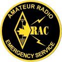
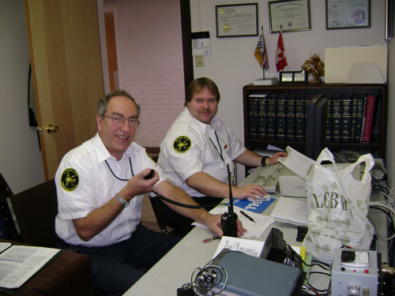

|
 |
Renfrew County
ARES |
 |
|
|
Please report any additions, corrections, or suggestions to web page author:
This is an independent website and not part of, nor sponsored by, the Radio Amateurs of Canada Inc.
The RAC AMATEUR RADIO EMERGENCY SERVICE AND DESIGN trademark is owned by RADIO AMATEURS OF CANADA INC.
Bob Howard, VE3YX. is a licenced user of the RAC AMATEUR RADIO EMERGENCY SERVICE AND DESIGN trademark.
Corporate Sponsor: Les Thom VE3PL
Web Site : TECHNIFEST